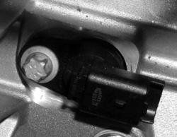

2127OA CHECK ON OPERATION OF CLUTCH DISC SPEED SENSOR THROUGH ROAD TEST
- Path
- Test > 21 GEARBOX UNIT > 2127 ELECTRO-HYDRAULIC SELECTION GEARBOX EXTERNAL CONTROLS > 2127O ELECTROHYDRAULIC SELECTION GEARBOX EXTERNAL CONTROLS TESTS > 2127OA CHECK ON OPERATION OF CLUTCH DISC SPEED SENSOR THROUGH ROAD TEST
- Kind
- test / check procedure
- Applies to
- engines: 2.2 JTS; all production periods; only with equipment: Smart gearbox
- Interactive page
- https://sloeber94.github.io/elrnDB-aBrrSpdr/en/#/946004570
Applies to: engines: 2.2 JTS; all production periods
STEP | CHECK TO BE PERFORMED | REMEDIAL ACTION IF THE CHECK IS NOT OK |
|---|---|---|
1 | Road test to check gearbox main shaft speed sensor Connect the Examiner diagnostic equipment. In “Parameter” mode display: engine rpm and clutch speed Start the engine and place the gearbox in neutral Check that the gearbox main shaft corner piece speed is zero With a gear engaged and the engine at idle check that the main shaft corner piece speed is not greater than zero (if it is more than zero the clutch is driven) | Carry out with Examiner in "Configuration/Procedure" mode Clutch autocalibration enablement If the clutch plate speed is higher than zero again after carrying out the above procedure, proceed to step 2. If the fault persists Move on to Step 2 |
2 | Checking the gearbox main shaft speed sensor Check the continuity of the wiring between the sensor and the gearbox control unit Check that the sensor resistance value is between 900 Ohm ± 10% | Restore the wiring between the sensor and the gearbox control unit Replace the main shaft speed sensor Op. 2127E52 HYDRAULIC SELECTION GEARBOX INPUT SHAFT SPEED SENSOR - R.R. If the fault persists Move on to Step 3 |
3 | Replacing the gearbox control unit Replace the gearbox control unit Op. 2127E10 HYDRAULIC SPEED SELECTION SYSTEM CONTROL UNIT - R.R. and check it is working correctly | The fault persists Move on to Step 4 |
4 | Checking the clutch kit operation Check that the clutch mechanism is working correctly | Replace the clutch kit Op. 1810A28 CLUTCH - R.R. FOR MANUAL GEARBOX WITH HYDRAULIC SELECTION VERSIONS |
5 | Correct operation check Connect the Examiner diagnostic equipment. In “Parameter” mode display: engine rpm and clutch speed With the engine at idle Select first gear Accelerate and check that the clutch plate corner piece is not at zero (clutch driven condition) Carry out a road test at a constant speed without gear changes. Whilst driving, observe the two parameter selected Check that there are not any significant fluctuations/differences of the clutch rpm signal compared with the engine rpm |

Gearbox main shaft speed sensor
Topics linked from this page (4)
- 1810A28 CLUTCH - R.R. FOR MANUAL GEARBOX WITH HYDRAULIC SELECTION VERSIONS
- 2127E10 HYDRAULIC SPEED SELECTION SYSTEM CONTROL UNIT - R.R.
- 2127E52 HYDRAULIC SELECTION GEARBOX INPUT SHAFT SPEED SENSOR - R.R.
- E7051 ROBOTIZED GEARBOX